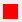

The following functions can be performed in the fields with these symbols:
| | Click on the eye symbol to change the visibility of the signal curve. |
|  | Double-click on the colored rectangle in the column using the symbol to open the color selection dialog. |
| | Click on the recycle bin symbol to delete the signal (and its recorded data) from the configuration. Deletion is only possible in a changeable configuration. |
From the keyboard, all the above symbols can be used by pressing "Enter" when the grid cursor is on the symbol.